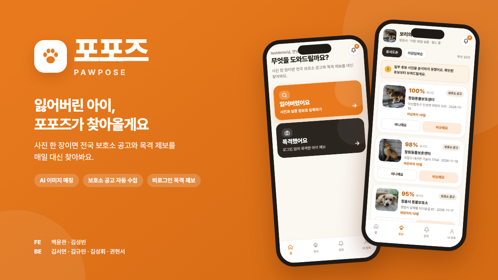
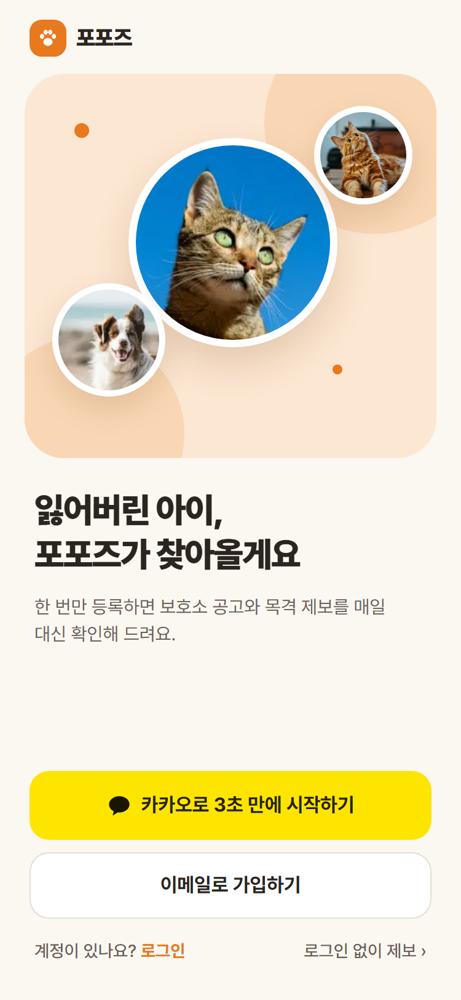
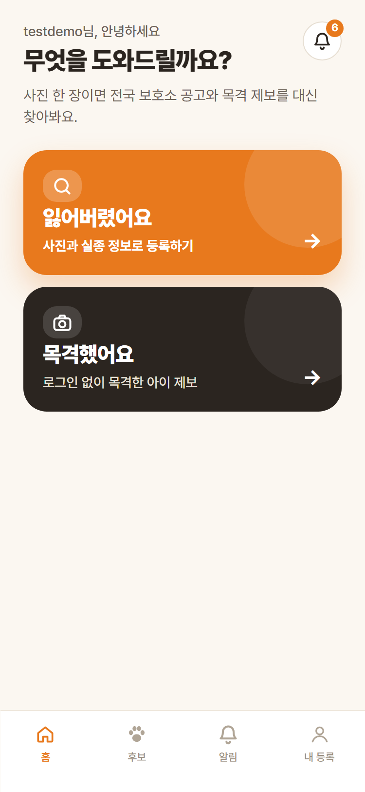
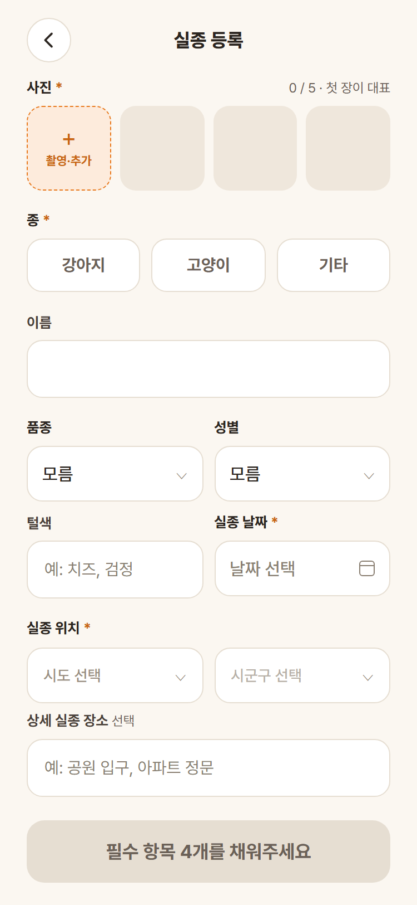
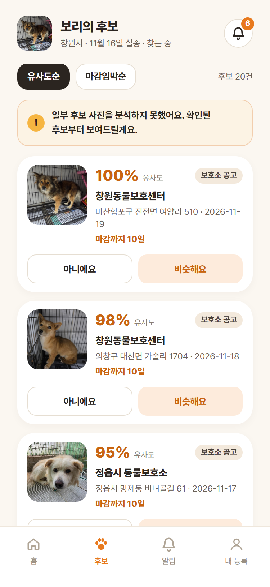
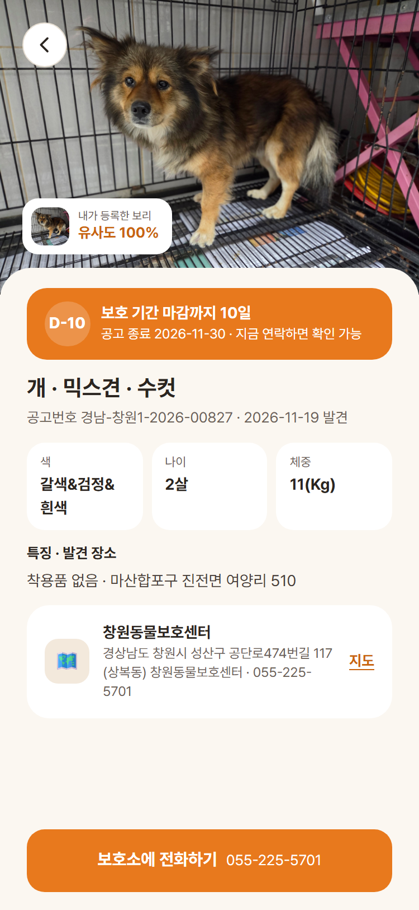
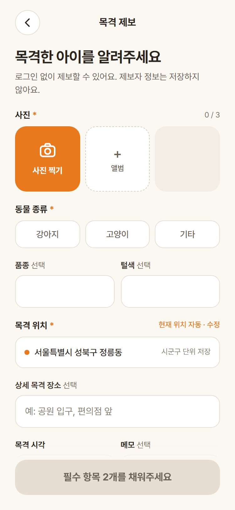
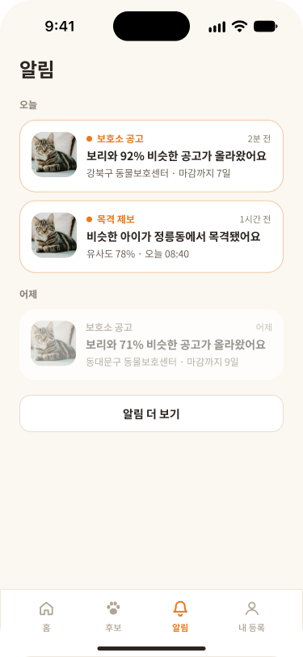
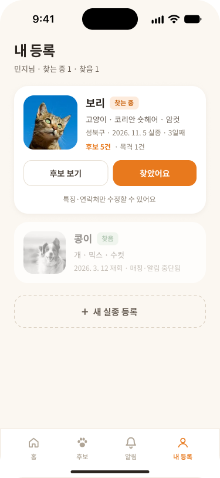

🐾 포포즈 (PAWPOSE)
사진 한 장으로 전국 보호소 공고와 목격 제보를 매일 대신 찾아주는 실종 반려동물 찾기 서비스입니다.
🚀 Deployment
🌐 포포즈를 직접 만나보세요! 포포즈 바로가기 →
🔑 데모 계정
demo@pawpose.com/password1234
💡 서비스 소개
포포즈는 반려동물을 잃어버린 보호자가 매일 보호소 공고를 직접 뒤지지 않아도 되도록 돕는 서비스입니다.
반려동물을 잃어버리면 보호자는 국가동물보호정보시스템의 공고를 하루에도 몇 번씩 확인해야 합니다. 공고는 지역마다 흩어져 있고, 보호 기간이 지나면 입양이나 안락사로 이어질 수 있어 시간이 가장 중요합니다.
포포즈는 실종 반려동물의 사진 한 장만 등록하면 전국 보호소 공고를 자동으로 수집하고, AI 이미지 매칭으로 비슷한 아이를 유사도 순으로 보여줍니다. 길에서 비슷한 아이를 본 사람은 로그인 없이 목격 제보를 남길 수 있고, 새 후보가 생기면 보호자에게 알림으로 알려드립니다.
찾는 일은 포포즈가, 보호자는 확인만! 남은 보호 기간과 보호소 연락처까지 한 화면에서 확인할 수 있습니다.
✨ 주요 기능
01. 사진 한 장으로 실종 등록
카카오 또는 이메일로 로그인한 뒤, 실종 반려동물의 사진(최대 5장)과 종 · 실종 날짜 · 실종 위치를 등록합니다. 등록과 동시에 사진을 분석해 보호소 공고와 바로 비교를 시작합니다.



02. AI 이미지 매칭 · 후보 목록
공공 API에서 30분마다 보호소 공고를 수집하고, 실종 사진과 공고 사진을 이미지 임베딩(SigLIP)으로 비교해 비슷한 순으로 상위 20건을 보여줍니다. 유사도순 · 마감임박순으로 정렬할 수 있고, 후보마다 비슷해요 / 아니에요를 남겨 목록을 정리할 수 있습니다.

03. 공고 상세 · 마감 카운트다운
후보를 누르면 공고 사진과 특징, 보호 기간 마감까지 남은 날짜(D-N), 보호소 주소와 지도를 보여줍니다. 하단의 보호소에 전화하기 버튼으로 바로 연락할 수 있습니다.

04. 로그인 없는 목격 제보
길에서 비슷한 아이를 본 사람은 로그인 없이 사진과 위치만 남기면 됩니다. 현재 위치는 시군구 단위로 자동 입력되고, 제보자 정보는 저장하지 않습니다. 제보 사진은 등록된 실종 반려동물과 바로 비교되어 비슷한 아이의 보호자에게 전달됩니다.

05. 새 후보 알림 · 내 등록 관리
새 공고 후보나 목격 제보가 생기면 앱 내 알림과 종 아이콘 뱃지로 알려드립니다. 내 등록 화면에서는 반려동물별 찾는 중 / 찾음 상태와 후보 수를 확인하고, 아이를 찾으면 찾았어요로 매칭과 알림을 멈출 수 있습니다.


🛠️ 기술 스택
| 구분 | 기술 |
|---|---|
| Frontend | React 19, JavaScript (ES6+), Vite 8, CSS Modules |
| Routing | React Router DOM 7 |
| API | Fetch API, REST API |
| Backend | Java 17, Spring Boot 3.5, Spring Security, Spring Data JPA, Bean Validation, JWT |
| Database | PostgreSQL 16 (배포), H2 (로컬 개발) |
| Image Matching | Python, PyTorch, Transformers, SigLIP (google/siglip-base-patch16-224) |
| Cloud & Infrastructure | AWS EC2, AWS S3, Docker, Docker Compose, Nginx, Vercel |
| CI/CD | GitHub Actions, Docker Hub |
| External Service | 국가동물보호정보시스템 공공 API, Kakao Login, Kakao Local API |
| API Documentation | OpenAPI, Swagger UI, springdoc-openapi |
| Collaboration | GitHub, Figma, Notion, Discord |
📁 프로젝트 구조
src
├─ apis 백엔드 API 호출
├─ assets 아이콘 · 이미지
├─ components 공통 · 화면 단위 컴포넌트
├─ constants 상수 · 문구
├─ hooks 화면 로직 훅
├─ layouts 하단 탭 레이아웃
├─ pages 라우트별 화면
├─ routes 라우트 · 로그인 가드
├─ styles 디자인 토큰 · 전역 스타일
└─ utils 날짜 · 이미지 등 유틸
⚙️ 실행 방법
npm ci
cp .env.example .env
npm run dev
| 환경 변수 | 설명 |
|---|---|
VITE_API_BASE_URL |
백엔드 API 주소 (https://api.findpawpose.site) |
VITE_KAKAO_REST_API_KEY |
카카오 REST API 키 |
📜 오픈소스 · 데이터 출처
| 이름 | 용도 | 라이선스 |
|---|---|---|
| React | UI 라이브러리 | MIT |
| React Router | 라우팅 | MIT |
| React DayPicker | 실종 날짜 선택 달력 | MIT |
| react-zoom-pan-pinch | 사진 확대 보기 | MIT |
| Vite | 빌드 도구 | MIT |
| Pretendard | 폰트 | SIL OFL 1.1 |
| SigLIP | 이미지 임베딩 모델 | Apache-2.0 |
| 국가동물보호정보시스템 구조동물 조회 API | 보호소 공고 · 사진 | 공공데이터포털 이용약관 |
| Kakao Developers | 카카오 로그인 · 좌표→행정구역 변환 | Kakao 이용약관 |
- 시작 화면 반려동물 사진
- 고양이(가운데): Unsplash · Unsplash License
- 강아지(왼쪽): Pauline Loroy, Unsplash · Unsplash License
- 고양이(오른쪽): Amber Kipp, Pexels · Pexels License
- 아이콘: 직접 제작
👥 팀원
📂 Repository
💻 Frontend
포포즈의 사용자 인터페이스와 클라이언트 기능을 담당합니다.
⚙️ Backend
포포즈의 REST API, 공고 수집, 이미지 매칭, 데이터 관리를 담당합니다.